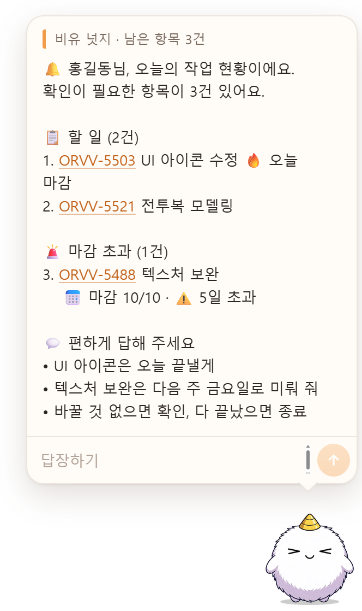
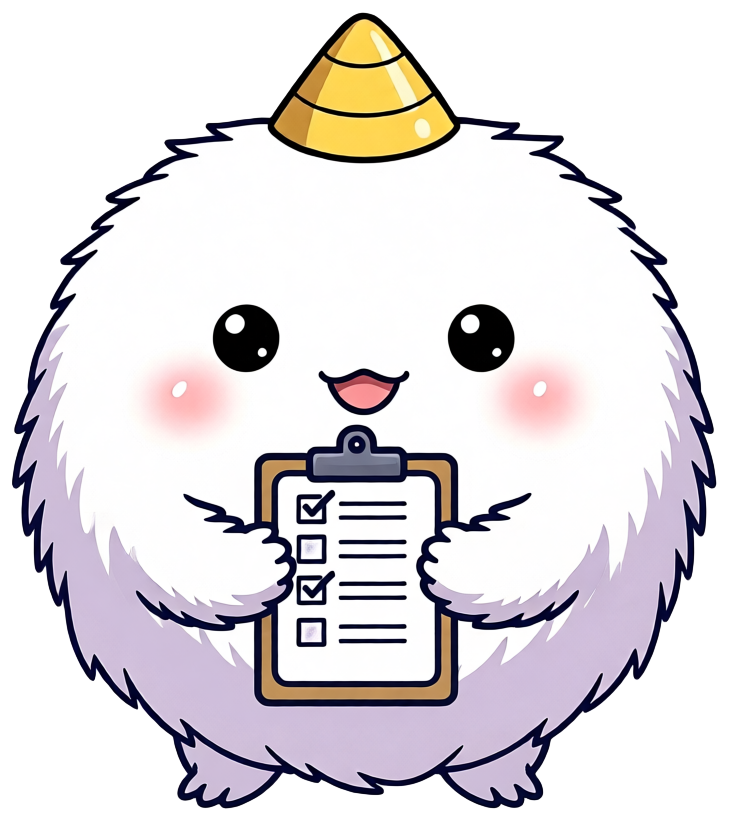

비유 펫이 아침에 중요한 걸 알려줘요
출근해서 PC 켜기
비유가 자동으로 켜져 바탕화면에 나타나요
오늘 확인할 주요 작업 보기
할 일, 오늘 마감, 마감이 지난 일을 대화 카드로 보여 줘요
자연어로 답하기
“UI 아이콘은 오늘 끝낼게”처럼 말하면 돼요
Jira에 바로 반영
상태와 날짜가 바뀌고, 마감일을 바꾼 사유는 코멘트로 남아요

비유는 이런 일을 할 수 있어요
오늘 할 일 알림
아직 시작하지 않은 작업을 출근하자마자 보여 줘요
마감 초과 챙기기
마감이 지난 작업을 따로 모아 놓치지 않게 알려요
말 한마디로 처리
작업 이름으로 편하게 말하면 상태와 날짜가 바뀌어요
날짜 고치기
시작일·마감일을 ‘금요일’, ‘내일’로 바꿔요
내 작업·검색
내 작업, 파트별·담당자별 작업을 찾아 줘요
문서·새 작업
기획 문서 등을 Confluence에서 찾고 새 Jira 작업을 만들어요
